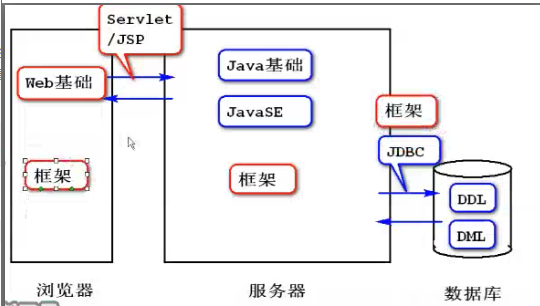
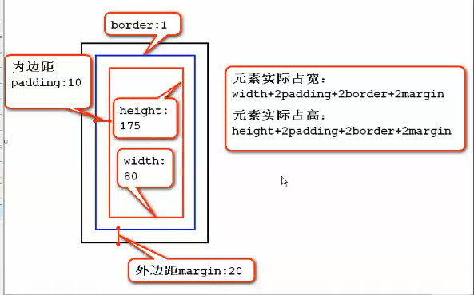

原文连接:https://www.cnblogs.com/l-y-h/p/11167106.html
一、Web项目（可跳过，直接从下一个标题开始）
1、Web项目：
指的是带网页的项目，通过浏览器可以访问的项目。比如：淘宝、天猫等。
2、Web项目构成：
浏览器（客户端）、服务器、数据库。
3、Java Web项目访问流程：
客户端通过Servlet/JSP与服务器进行联系，服务器通过JDBC与数据库进行联系。

4、Java Web程序员学习目标：
（1）如何对服务器进行编程。
（2）如何对数据库进行编程。
（3）如何使服务器访问数据库。
（4）如何对客户端进行编程。
（5）如何使客户端访问服务器。
（6）如何使用框架提高效率。
5、Web基础（写网页）：
（1）HTML：用来勾勒出网页的结构与内容。
（2）CSS：用来装饰网页。控制页面的外观和表现。
（3）JavaScript：用来使网页出现动态的效果。控制页面的行为。
二、HTML
1、HTML工作原理：
HTML是部署在服务器上的文本文件。
（1）根据HTTP协议，浏览器发送请求到服务器。
（2）服务器做出响应，并返回响应请求到浏览器。
（3）浏览器执行HTML，并显示内容。
即HTML部署在服务端，运行在客户端。
2、XML：
（1）XML（Extensible Markup Language）指可扩展标记语言。主要用于存储或传输数据以及作为配置文件。（重点为数据的内容）
（2）可扩展表现为：标签可扩展、属性可扩展、元素之间嵌套关系可扩展。
（3）严格要求标签的嵌套、配对，属性必须要有值，属性值写在引号中。
（4）XML解析方式：
DOM解析方式：指Document Object Model，即文档对象模型，是W3C组织推荐的一种处理XML的一种方式。DOM解析文档时，会将文档中所有元素，按照其出现的层次关系，将其解析成一个一个的Node对象（节点）。DOM优点：把xml文件在内存中构造出树形结构，可以遍历并修改节点。缺点：如果文件较大，内存有压力，解析时间长。
SAX解析方式：指simple API for XML ，是一种XML解析的替代方法。SAX逐行扫描文档，边扫描边解析。相比于DOM，SAX是一种速度更快、更有效的方法，且SAX可以在解析文档的任意时刻停止解析。SAX优点：解析速度快，没内存压力。缺点：不能对节点进行修改。（比如安卓）
3、HTML:
（1）HTML（HyperText Markup Language）指超文本标记语言，是一种纯文本类型的语言。用于显示数据。（重点是数据的外观）
（2）可以理解为固定的XML，标签固定、属性固定、元素嵌套关系固定。
（3）HTML存在多个版本，若不能正确识别版本，则浏览器不能正确的显示页面。使用<!DOCTYPE>用于声明HTML版本。
例如：
声明HTML5版本，
<!DOCTYPE html>（4）基本结构：
<!-- 将文档声明为HTML5版本 -->
<!DOCTYPE html>
<!--html是唯一的根-->
<html>
<head>
<!--设置文档标题、编码、引入的资源-->
</head>
<body>
<!--页面上要呈现的内容-->
Hello HTML!
</body>
</html>（5）<head>标签：
是所有头部元素的容器。
<head>可以有元素<title>,<meta>,<link>,<style>,<script>。用于设置文档标题、编码、引入的资源。
<title>定义页面标题，若不设置，则默认为当前文件名。
<meta>提供关于HTML文档的元数据，该数据不会显示在页面上，但对于机器是可读的。常见属性有：content, http-equiv, charset。用于规定页面的描述、关键字、文档的作者、最后修改的时间以及其他元数据。
<!-- 将文档声明为HTML5版本 -->
<!DOCTYPE html>
<!--html是唯一的根元素 -->
<html>
<head>
<!-- 设置标题、编码、引入的资源 -->
<!-- 设置文档标题 -->
<title>我的第一个网页</title>
<!-- 设置编码格式, 要和文档保存的编码格式相同-->
<meta charset = "utf-8"/>
</head>
<body>
<!-- 文档呈现的内容 -->
Hello HTML!
</body>
</html>
三、HTML标签
1、文本元素（文本标签）
（1）作用：
文本是网页上的重要组成部分，直接书写的文本会使用浏览器的默认样式显示。
（2）分类：
标题元素（<h1> ~ <h6>）。
段落元素（<p>）。
列表元素（<ol> <li>, <ul> <li>）。
分区元素（<div>， <span>）。
行内元素（<i>, <em>, <br>等）。
（3）标题元素（<h1> ~ <h6>）：
标题元素使文字突出，一般用于文章的标题，显示不同的字体大小。
语法规则：
<h#></h#>，其中# = 1,2,3,4,5,6。其中<h1>为最大号标题。（4）段落元素（<p>）：
段落元素提供了结构化文本的方式。文本会用单独的段落显示，与前后文本分开，并添加一段额外的垂直空白距离。可以使用<br>主动换行。
语法规则：
<p>文本内容</p>。（5）列表元素（<ol> <li>, <ul> <li>）：
列表将具有相似特征或者具有先后顺序的几行文字进行排序。所有的列表都由列表类型和列表项组成。
列表类型：有序列表（<ol>），无序列表（<ul>）。
列表项指：<li>，用于显示具体的列表内容。
语法规则：
【有序列表（在文本内容前加数字表示顺序）：】
<ol>
<li>文本内容</li>
<li>文本内容</li>
</ol>
【无序列表（在文本内容前加小圆点表示无序）：】
<ul>
<li>文本内容</li>
<li>文本内容</li>
</ul>
【有序、无序嵌套：】
<ol>
<li>
文本内容
<ul>
<li>文本内容</li>
<li>文本内容</li>
</ul>
</li>
<li>文本内容</li>
</ol>（6）分区元素（<div>， <span>）
分区元素用于元素分组，常用于页面布局，便于开发。
语法规则：
【块分区元素（会影响页面布局）】：
<div>文本内容</div>
【行内分区元素（设置同一行文字中的不同格式）】：
<span>文本内容</span>（7）行内元素（<i>, <em>, <br>等）
<i>， <em>元素用来定义斜体字。
<b>, <strong>元素用来定义粗体字。
<del>元素用来定义带删除线的文字。
<u>元素用来定义带下划线的文字。
<br>元素用来换行。
表示空格（其分号不能少）。
< 表示小于号（<）。
> 表示大于号（>）。
& 表示（&）。
© 表示版权（©）。
2、图像、超链接、锚点、表格
（1）图像<img>:
使用<img>元素将图像添加到页面。
必须存在的属性：src（添加路径）。常用属性：width, height。
语法规则：
<img src="" width="" height="">
src属性：指图片路径。
width属性：指图片宽度。
height属性：指图片高度。（2）超链接<a>:
使用<a>元素创建一个超链接。
语法规则：
<a href ="" target = "">文本</a>。
href属性：指链接的URL。
target属性：指目标的打开方式，可取值为_blank（打开新窗口）， _self（当前窗口打开）等。（3）锚点（特殊的超链接）：
锚点是文档中某行的一个记号，用于链接（跳转）到文档中的某个位置。
语法规则：
定义锚点：
<a name = "name1">锚点一</a>
链接到锚点（要在锚点名前加#）：
<a href = "#name1">回到锚点一</a>
默认的链接为回到顶部，不需要设置锚点。
格式：
<a href = "#"></a>（4）表格：
表格通常用来组织结构化的信息。表格是由一些矩形框（单元格）按照从左到右，从上到下的顺序排列而成的。表格的数据显示在单元格内。
表格元素为：
table（表格）,
td（列，是单元格）,
tr（行）。
默认情况下，表格的边线看不见，可以给table统一设置边线可见。
cellpadding:单元格边框与内容间的间距。
cellspacing:单元格之间的间距。
常用属性：
<table>常用属性：border, width, height, align, cellpadding, cellspacing.
<tr>常用属性:align, valign .
<td>常用属性：align, valign, width, height, colspan, rowspan。
rowspan：跨行，使当前单元格沿着垂直方向延伸，值为合并单元格数。
colspan：跨列，使当前单元格沿着水平方向延伸，值为合并单元格数。
caption元素：为表格定义标题，默认居中显示在表格上方。
举例：
<!-- 创建一个两行两列的表格 -->
<table border="1px" width="100px" height="100px">
<caption>
测试
</caption>
<tr>
<td colspan="2" align="center"> aaa </td>
</tr>
<tr>
<td> ccc </td>
<td> ddd </td>
</tr>
</table>
表格行分组：
表格可以分成3部分：表头，表主体和表尾。分组的目的是为了方便对组内元素设置样式以及编程（JS）。
表头行分组：<thead></thead>
表主体行分组：<tbody></tbody>
表尾行分组：<tfoot></tfoot>
【举例：】
<!-- 创建一个两行两列的表格，使用<tbody> -->
<table border="1px" width="100px" height="100px">
<caption>
测试
</caption>
<tbody>
<tr>
<td colspan="2" align="center"> aaa </td>
</tr>
<tr>
<td> ccc </td>
<td> ddd </td>
</tr>
</tbody>
</table>
3、表单<form>
（1）表单的作用：
表单用于显示、收集信息，并提交信息到服务器。表单是浏览器向服务器传输数据的手段。
表单处理：
实现数据交换的可见界面元素，比如文本框、按钮等。
提交后的表单处理（不可见）。
（2）表单<form>：
使用<form>元素创建表单。并在<form>元素中添加表单控件元素。即form元素在页面上有固定的表单范围，其内部的空间才可提交。
主要属性：
action：定义表单被提交时发生的动作，通常包含服务方脚本的URL（JSP或PHP等）。
method：指出表单数据的提交方式，取值为get或者post。
enctype：表单数据进行编码的方式。
name：表单的名称。（3）表单控件：
表单控件元素是包含在表单元素中具有可视化外观的HTML元素，用于访问者输入信息。即表单控件是一种HTML元素，是信息输入项。表单可以包含很多不同类型的表单控件。
常用表单控件：
input元素：文本输入控件、按钮、单选和复选框、选择框、文件选择框和隐藏控件等。
textarea元素：定义多行的文本输入控件。
select和option元素：可创建单选或多选菜单。（4）<input>标签：
<input>元素用于收集用户信息。该元素是一个单标记，即格式为<input />。
属性：
type：根据不同type值，可以创建各种类型的输入字段，比如文本框、复选框等。
value：控件的数据。
name：控件的名称。
文本框与密码框：
文本框：<input type="text" />
密码框：<input type="password" />
【主要属性：】
value属性：由访问者自由输入的任何文本。
maxlength属性：限制输入的字符数。
readonly属性：设置文本控件可读。
【举例：】
<!-- label是表单中的文本，通过for属性可以绑定到input元素上，使得点击此label时，相当于点击了对应的input。id相当于元素的身份证号，用来引用该元素 -->
<label for="userName">账号：</label>
<input type="text" id="userName"/>
<label for="pwd">密码：</label>
<input type="password" id="pwd" />
单选框与复选框：
单选框：<input type="radio" />
复选框：<input type="checkbox" />
【主要属性：】
value：文本，当提交form时，如果选中此单选按钮，那么该value值将被发送到服务器。
name：用于实现分组，一组单选框或者复选框名称必须相同。
checked：设置选中。
【举例：】
<!-- 单选框(按钮) ，一组单选框间需彼此互斥，需使其同名，即radio同名.checked表示默认选项（默认选中）-->
<input type="radio" name="sex" id="male" checked/>
<label for="male">男</label>
<input type="radio" name="sex" id="female" />
<label for="female">女</label>
<!-- 多选框（按钮）name属性用于分组，id用于标识 -->
<input type="checkbox" name="favorites" id="basketball" />
<label for="basketball">篮球</label>
<input type="checkbox" name="favorites" id="football" />
<label for="football">足球</label>
<input type="checkbox" name="favorites" id="volleyball" />
<label for="volleyball">排球</label>
提交、重置、普通按钮：
提交按钮：<input type="submit" />传送表单数据到服务器端或其他程序进行处理。
重置按钮：<input type="reset" />清空表单数据，并将表单控件设置为最初的默认值。
普通按钮：<input type="button" />用于执行客户端脚本。
【主要属性：】
value：按钮的标题文本，即按钮上显示的文本内容。
【举例：】
<input type="submit" value="提交"/>
<input type="reset" value="重置"/>
<input type="button" value="取消"/>
隐藏域、文件选择框：
隐藏域：<input type="hidden" />在表单中包含不希望用户看见的信息。
文件选择框：<input type="file" />选择要上传的文件。
【举例：】
<!-- 隐藏域，即隐藏的文本框（看不见），用来封装一些不希望被用户看到的数据。该控件的数据不需手动输入，而是预置数据。 -->
<input type="hidden" value="123"/>
<!-- 文件选择框 ,用于提交文件-->
<lable for="attachment">上传附件：</lable>
<input type="file" id="attachment" />（5）<textarea>标签：
文本域：相当于多行文本框。
语法：
<textarea>文本</textarea>
主要属性：
cols：指定文本区域的列数。
rows：指定文本区域的行数。
readonly：只读。
【举例：】
<!-- 文本域可以使用cols设置列数，使用rows设置行数。文本内容为默认值，可不写。-->
<label for="desc">自我介绍</label>
<textarea id="desc" cols="30" rows="5">
Hello World!
</textarea>（6）<select>标签：
下拉选项：下拉框，用于多个内容的选择。
语法：
<select>
<option>---请选择---</option>
<option value="1">Java</option>
<option value="2">Php</option>
<option value="3">.net</option>
</select>
四、CSS
1、CSS
（1）什么是CSS？
CSS（Cascading Style Sheets）,指层叠样式表。样式通常存储在样式表中，定义如何显示HTML，即CSS给HTML化妆（修饰）的。
（2）如何使用CSS？
内联方式：即样式表定义在单个HTML元素中。
内部样式表：样式定义在HTML页的头元素中。
外部样式表（推荐使用）：将样式定义在一个外部的CSS文件中（.css文件）。由HTML页面引用样式表文件。
（3）CSS内联样式：
样式定义在HTML标签的style属性里。
语法规则：
1、只需将分号隔开的一个或多个属性/值对作为元素的style属性的值。
2、属性和属性值间用（:）冒号连接。
3、多个属性间用（;）分号隔开。
【格式：】
<h1 style="color:red;">内联样式演示</h1>（4）CSS内部样式：
样式定义在HTML文档的头部标签<head>的<style>标签内。
语法规则：
在<head>元素里添加<style>元素，然后在<style>元素里添加样式规则。
【格式：】
<head>
<title>CSS演示</title>
<meta charset="utf-8" />
<!-- 内部样式 -->
<style type="text/css">
h2{
color:blue;
}
</style>
</head>（5）CSS外部样式：
样式定义在独立的（.css）文件里。是一个纯文本文件，文件后缀名（.css）。该文件只包含样式规则。然后在HTML的头部标签<head>中通过<link>元素来引用。
语法规则：
<!-- 外部样式，需引用（.css）文件。 rel表示引用的是什么文件，type表示引用的格式。href表示路径-->
<link rel="stylesheet" type="text/css" href="../css/CSS演示.css"/>（6）CSS规则特性：
继承性： 父元素的CSS声明可以被子元素继承、比如字体、颜色等。
层叠性： 同一个元素若存在多个CSS规则，对于不冲突的声明可以进行叠加。
优先级： 同一个元素若存在多个CSS规则，对于冲突的声明可以以优先级高的为准。即相同的样式，如果重复定义，则以最后一次定义为准（就近原则）。
（7）CSS写法：
CSS由CSS选择器以及CSS声明组成。
选择器用于定位到某个元素。
声明用于给元素附加效果。
2、CSS选择器
（1）分类：
元素选择器。
类选择器。
id选择器。
选择器组。
派生选择器。
伪类选择器。
（2）元素选择器：
通过元素名（标签名）来选择CSS作用的目标。
格式：
p{
}
使用情景：
如果页面中有多个相同元素需要相同的样式效果，那么可以使用元素选择器。
【举例：】
<style type="text/css">
p{
color:red;
}
</style>（3）类选择器：
类选择器允许以一种独立于文档元素的方式来指定样式。所有能附带class属性的元素都可以使用此样式声明，并将元素的class属性值设置为样式类名。
格式：
.className{
}
使用情景：
如果页面中有不同的元素需要相同的样式效果，可以使用类选择器。
【举例：】
<style type="text/css">
.important{
color:red;
}
</style>
<h1 class = "important">Hello</h1>
<h2 class = "important">World</h2>
可以将类选择器和元素选择器结合，以实现一个元素中不同样式的控制。
【格式：】
元素选择器.className{
}
【举例：】
<style type="text/css">
p.test1{
color : red;
}
p.test2{
color : yellow;
}
</style>
<p class = "test1">Hello</p>
<p class = "test2">Hello</p>（4）id选择器：
id选择器以一种独立于文档元素的方式来指定样式。仅作用于id的值。
格式：
【格式：】
#id{
}
【举例：】
<style type="text/css">
#d1{
color:red;
}
</style>
<div id="d1">HelloWorld</div>（5）选择器组：
选择器组是以逗号隔开的选择器列表，将一些相同的规则作用于多个元素。
【格式：】
.className, #id{
}
【举例：】
<style type="text/css">
.test1, #e2{
color : blue;
}
</style>
<p class = "test1" id="e1">Hello</p>
<p class = "test2" id="e2">Hello</p>（6）派生选择器：
派生选择器用来选择子元素。
分类：
后代选择器：选择某元素的所有后代（子孙）元素。（以空格隔开）
子元素选择器：选择某元素的所有子（儿子）元素。（以>隔开）
【举例：后代选择器】
<style type="text/css">
/*将 id=d1 元素中 所有元素中的 p元素 改为红色*/
#d1 p{
color:red;
}
</style>
<div id="d1">
<p id="p1">Hello</p>
<p id="p2">Hello</p>
</div>
【举例：子元素选择器】
<style type="text/css">
/*将 id=d1 元素中 id=p1 的元素 改为红色*/
#d1>#p1{
color:red;
}
</style>
<div id="d1">
<p id="p1">Hello</p>
<p id="p2">Hello</p>
</div>（7）伪类选择器：
伪类用于设置同一元素在不同状态下的样式。
常用伪类：
:link：向未被访问的超链接添加样式。
:visited：向已被访问的超链接添加样式。
:active：向被激活的元素添加样式。
:hover：当鼠标悬停在元素上方时，向该元素添加样式。
:focus：当元素获取焦点时，向该元素添加样式。
【举例：】
<!DOCTYPE html>
<html>
<head>
<title>CSS演示</title>
<meta charset="utf-8" />
<style type="text/css">
/*浏览器从未点击过的超链接，显示相应样式*/
a:link{
color:blue;
}
/*浏览器点击过的超链接，显示相应样式*/
a:visited {
color:red;
}
/*选择激活（正被点击）的元素，正被点击的话改变样式*/
#btn:active{
background: pink;
}
/*选择鼠标悬停的目标，鼠标悬停在目标上方会改变样式*/
img:hover{
width:200px;
height:200px;
}
/*选择有焦点的文本框,点击选中后会改变相应样式*/
#t1:focus{
background-color:red;
}
</style>
</head>
<body >
<p>
<!--测试（:link）与（:visited），若超链接被点击过，则显示红色，未被点击过，则显示蓝色-->
<a href="http://www.baidu.com" target="blank">百度</a>
</p>
<p>
<!--测试（:active），若点击按钮，则变粉红色，不点击会恢复原来的颜色-->
<input type="button" value="点我啊" id="btn" />
</p>
<p>
<!--测试（:hover）,鼠标放在图片上，则图片会改变大小-->
<img src="../images/pig.png">
</p>
<p>
<!--测试（:focus），鼠标点击后（获取焦点），则背景改为红色-->
<input type="text" id="t1" />
</p>
</body>
</html>
3、常用CSS声明（border, box, background, table, font）
（1）样式规则：
样式单位：
%：百分比。（常用，动态适应大小）
in：英寸。
cm：厘米。
mm：毫米。
pt：磅（1pt等于 1/72 英寸）。
px：像素（计算机屏幕上的一个点）。（常用，固定大小）
em：1em相当于当前字体尺寸，2em为当前尺寸的两倍。（常用，根据文字设置大小）
样式颜色：
#rrggbb：十六进制数。如#ff0000.
#rgb：简写的十六进制数。如#f00，等价于#ff0000
rgb(x, y, z)：RGB的值，如rgb(255, 0 , 0)。
rgb(x%, y% , z%)：RGB的百分比值，如rgb(100%, 0%, 0%)。
表示颜色的英文单词，如red。
【举例：】
黑色（rgb(0,0,0)），白色（rgb(1,1,1)），灰色（rgb(a,a,a)）（2）boeder(边框)
border属性：用来设置元素的边框。
格式：
【四边整体设置：】
格式：
border: width值 style值 color值;
【四边单独设置：】
格式：
border-left: width值 style值 color值;
border-right: width值 style值 color值;
border-top: width值 style值 color值;
border-bottom: width值 style值 color值;
【style值：】
dashed 用于表示虚线边框
solid 用于表示实线边框
即：
border: 1px dashed #ccc;表示灰色虚线边框。
border: 1px solid #ccc;表示灰色实线边框。
【举例：】
<style type="text/css">
/*dashed为虚线，solid为实线*/
p{
border: 1px solid red;
width:100px;
height:100px;
}
h1{
border-left: 15px solid #ccc;
border-bottom: 2px solid red;
}
</style>
数据溢出元素框处理：（overflow）
visible:默认格式，显示溢出的元素。
hidden：隐藏，不显示溢出的元素。
scroll：加滚动条，无论是否数据溢出，都加滚动条。
auto：自动，若溢出，则加滚动条，否则，不加。
【写法：】
【默认情况：（visible）】
div{
width:300px;
height:50px;
border:1px solid blue;
}
【隐藏数据：（hidden）】
div{
width:300px;
height:50px;
border:1px solid blue;
overflow:hidden;
}
【加滚动条：（scroll）】
div{
width:300px;
height:50px;
border:1px solid blue;
overflow:scroll;
}
【自动加滚动条：（auto）】
div{
width:300px;
height:50px;
border:1px solid blue;
overflow:auto;
}（3）box
框模型（box model）定义了元素框处理元素的内容、内边距、边框、外边距的方式。
内边距（padding）：元素的内容与border间的距离。默认为0 。
外边距（margin）：border与另外一个元素的距离。默认为0 。
注：增加内边距、外边距、边框的尺寸不会影响元素的内容尺寸，但会增加元素实际总尺寸。元素的内容尺寸与width与height有关。

【四边整体设置1：】
格式：
padding:width值;
margin:width值;
【四边整体设置2：顺序为上右下左（推荐）】
格式：
padding:width值 width值 width值 width值;
margin:width值 width值 width值 width值;
【四边整体设置3：对边设置】
格式：
padding:width值 width值;
margin:width值 auto;
【四边单独设置：】
格式：
padding-top:width值;
padding-right:width值;
padding-bottom:width值;
padding-left:width值;
margin-top:width值;
margin-right:width值;
margin-bottom:width值;
margin-left:width值;（4）background
背景色：
background-color属性用于给元素设置背景色，该属性接受任何合法的颜色值。
【举例：】
body{
background-color:#ccc;
}
背景图片：
background-image属性用于设置背景图片。默认值为none，表示背景上没有放置任何图像。若想设置一个背景图像，需使用 url 且添加一个相对URL（相对路径）或者绝对URL。
默认情况下，背景图片在水平和垂直方向上重复出现，类似于“墙纸”的效果。
background-repeat属性可以控制背景图片的平铺效果。
background-repeat:repeat；默认值，在水平和垂直方向上重复，为重复值。
background-repeat:repeat-x;仅在水平方向重复。
background-repeat:repeat-y;仅在垂直方向重复。
background-repeat:no-repeat;仅显示一次。
background-position属性用于改变背景图片在元素中的位置。
取值为：x% y% 或 x y 或 left\center\right\top\bottom等
注：
background: url("../images/hero0.png") no-repeat center;
等价于
background-image: url("../images/hero0.png");
background-repeat: no-repeat;
background-position: center;
默认情况下，背景图像会随着页面的滚动而滚动，可以通过background-attachment属性来改变此特征，
默认为scroll，即背景随文档滚动。
若取值为fixed，则背景图片固定，不随页面滚动，通常用于实现“水印”效果。
即：
body{
background-attachment:fixed;
}（5）font
用于格式化文本信息。
指定字体（可以指定多个字体）：font-family:value1, value2;
设置字体大小：font-size:value;
将字体加粗：font-weight:normal/bold;
设置文本颜色：color:value;
设置文本排列：text-align:left\right\center。
文字修饰：text-decoration:none\underline.
行高：line-height:value(1.6em); eg: line-height: 1.6em;
注：若行高与元素等高时，文字居中显示（文字默认不居中）。
首行文本缩进：text-indent:value(2em); eg: text-indent: 2em;（6）table
表格同样也有box框（边框、内边距、外边距、宽、高）以及文本格式化属性。
若设置了单元格的边框，则相邻单元格的边框会单独显示（默认，即边框与边框间有缝隙）。
使用border-collapse属性可以合并相邻的边框（即边框间无缝隙）。
即
border-collapse: separate/collapse；
4、定位（流定位、浮动定位、相对定位、绝对定位）
（1）定位
什么是定位：
指的是定义元素框 相对于 其正常位置应该出现的位置、或者相对于父元素、另一个元素甚至浏览器窗口所在的位置。
分类：
流定位（默认）
浮动定位
相对定位
绝对定位
固定定位。
属性：
position：规定元素的定位类型，取值为：static/relative/absolute/fixed。操作流定位、相对定位、绝对定位、固定定位。
偏移属性：用于定义元素框的偏移位置，取值为：top/bottom/left/right。
z-index：设置元素的堆叠顺序。（序号越大，越在上层，即覆盖其他元素）
float：浮动定位的属性，用于左、右浮动。
clear：浮动定位的属性，用于消除浮动的影响。（2）流定位（默认）
页面中的块级元素框从上到下一个接一个排列。每一个块级元素都会出现在一个新的行中。元素框间的垂直距离是由框的垂直外边距计算出来的。
行内元素在一行中从左到右排列，水平布置，不从新行开始，可以使用水平内边距、边框和外边距来调整它们的间距。
（3）浮动定位：（float，clear）
浮动定位指让元素脱离普通的流定位，将浮动元素放置在父元素的左边或者右边，浮动元素依旧存在于父元素内。
浮动的框可以向左或者向右移动，直到它的外边缘碰到父元素或者另外一个浮动框为止。经常用来实现特殊的定位效果。
使元素实现水平布局的效果。
float属性定义元素在哪个方向浮动，在CSS中，任意元素均可浮动。
float: none/left/right。不浮动/左浮动/右浮动
【格式：】
.d1, .d2, .d3{
float:left;
}
clear属性用来清除浮动所带来的影响。消除一个元素A浮动对另一个元素B的影响，操作的是元素B，只能消除对元素B的影响，不能消除元素A自身的影响。（可能不能完全消除所有影响）
clear:none/left/right/both;定义元素的哪边不允许出现浮动元素。
【格式：】
p{
clear:left;
}
浮动定位举例：（右浮动）
假如父元素有三个元素框，其由上到下排序，若将框1向右移动，则框1脱离并向右移动，直到碰到父元素的边框为止。且每次浮动完，父元素会收缩。

（4）相对定位（position：relative）
元素所占的空间不释放，元素框会相对于它原位置偏移某个距离。可以设置水平或者垂直位置，让元素相对于它的起点进行移动。
常用于照片的抖动效果。
【设置元素的相对定位：】
1、先设置position属性值为relative。
2、然后使用left属性或者right属性设置水平方向的偏移量，也可使用top属性或者bottom属性设置垂直方向的偏移量。
【格式：】
div{
position:relative;
left:50px;
top:50px;
}
【举例：照片墙效果】
<!DOCTYPE html>
<html>
<head>
<title>照片墙效果</title>
<meta charset="utf-8" />
<style type="text/css">
body{
background-color: #300;
}
ul{
width:780px;
margin:10px auto;
/*去掉li前的符号*/
list-style-type: none;
}
li{
background-color: #fff;
border: 1px solid #ccc;
width:218px;
margin: 10px;
padding: 10px;
float:left;
}
li p{
text-align: center;
}
li:hover{
position: relative;
left:-5px;
top:-5px;
}
</style>
</head>
<body>
<!-- 照片墙，首先是一个无序列表li,用于保存照片，（此时排列顺序由上到下）
然后使用左浮动，将图片进行排列， （此时排列顺序从左到右，从上到下）
当鼠标悬浮在图片上时，让图片偏移一点点（使用相对定位）。-->
<ul>
<li>
<img src="../images/01.jpg">
<p>啊</p>
</li>
<li>
<img src="../images/02.jpg">
<p>在苍茫的大海上</p>
</li>
<li>
<img src="../images/03.jpg">
<p>狂风卷积着乌云</p>
</li>
<li>
<img src="../images/04.jpg">
<p>在乌云和大海之间</p>
</li>
<li>
<img src="../images/05.jpg">
<p>有只海燕</p>
</li>
<li>
<img src="../images/06.jpg">
<p>来为我牵线</p>
</li>
</ul>
</body>
</html>
（5）绝对定位（position：absolute）
将元素内容从当前定位中移出，并释放空间。
使用偏移属性来固定该元素的位置。位置 相对于最近的已定位（相对定位）祖先元素，如果元素没有已定位的祖先元素，那么它的位置相对于最初的包含块（比如body元素）。
相对定位是相对于自身产生偏移，绝对定位是特殊的相对定位，相对于已定位的祖先元素产生偏移。
常用于文字在图片的各种位置上显示。
【设置元素的绝对定位：】
1、首先设置position属性的值为absolute。
2、然后使用left属性或者right属性设置元素的水平位置。（left取负值则向左移，right取负值向右移）
3、可以使用top属性或者bottom属性设置元素的垂直位置。
【格式：】
div{
position:absolute;
left:50px;
top:50px;
}
（6）固定定位（position：fixed）
将元素内容固定到页面的某个位置。此时元素从普通流中完全移出，不占用页面的空间，且用户滚动页面时，元素框不会随着移动。
常用于“水印”的效果。与背景图片中的background-attachment: fixed；功能类似。
常用于“跳转效果”，即页面滚动，其一直显示在某处，点击会跳转到顶部。
【 设置固定定位：】
1、首先设置position属性值为fixed。
2、通过left或right或top或bottom这些偏移属性来定义元素的位置。
【格式：】
div{
position:fixed;
left:50px;
top:50px;
}
（7）堆叠顺序（z-index）
一旦修改元素的定位方式，那么元素间可能存在堆叠情况。
使用z-index属性来控制元素框出现的重叠顺序。
常用于多个页面相互覆盖的情况，根据操作显示不同的页面。
z-index属性：
值为数值：数值越大，表示堆叠的顺序越高，即在页面中显示的越上方，离用户近。
可以将其设置成负值，表示离底层越近。
5、list-style-type、cursor
（1）列表样式（list-style-type、list-style-image）
list-style-type属性用于控制列表中列表项标志的样式。
无序列表（ul）:出现在列表旁的是圆点。
【取值为：】
none：无标记。
disc：实心圆（默认值）。
circle:空心圆。
square：实心块。
【格式：】
.ul{
list-style-type:circle;
}
有序列表（ol）:出现的可能是字母、数字或其他计数体系的一个符号。
【取值为：】
none：无标记。
decimal：数字（如1，2,3,4），为默认值。
lower-roman：小写罗马数字。（i, ii, iii, iv, v）
upper-roman：大写罗马数字。(I, II ,III, IV, V)
【格式：】
.ol{
list-style-type:decimal;
}
list-style-image属性是使用图像来代替列表项的标志。
【取值为：】
url(""),指定某图像作为标志。
【格式：】
.image{
list-style-image:url('');
}（2）cursor
默认情况下，光标会根据用户的操作发生改变，当鼠标悬停在一个链接上时，光标由指针形状改为手指形状。当鼠标悬停在文本区域时，光标由指针改为I形状。当鼠标悬停在一个按钮上时，光标会显示为箭头。
可以使用cursor属性指定鼠标的光标形状，以提示用户进行操作。cursor属性定义了鼠标指针放在某一个元素边界范围内时所用的光标形状。
取值：
default 默认光标（通常是一个箭头）
pointer 光标呈现为指示链接的指针（一只手）
crosshair 光标呈现为十字线。
text 此光标指示文本
wait 此光标指示程序正忙（通常是一只表或沙漏）。
help 此光标指示可用的帮助（通常是一个问号或一个气球）。